My Design Portofolio
Please feel free to explore my creative journey and design projects that showcase innovation and aesthetic excellence.
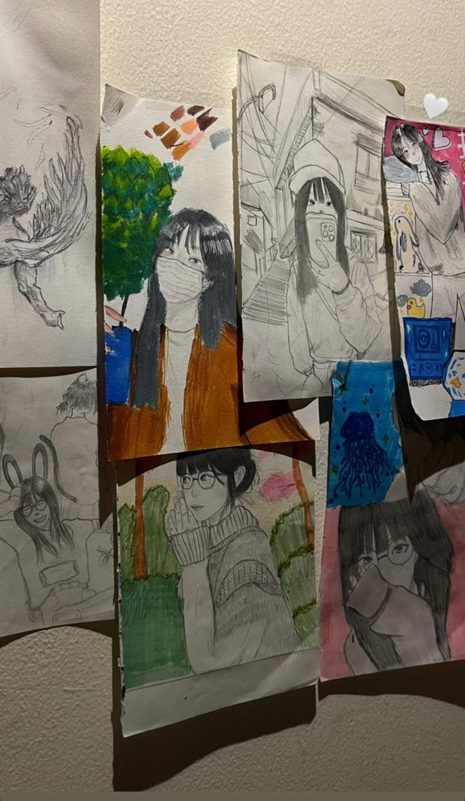
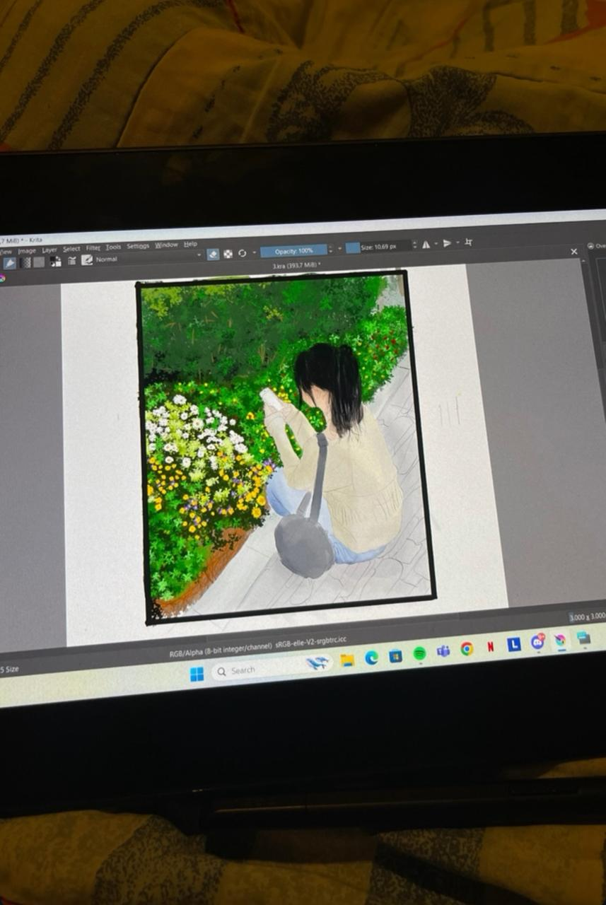
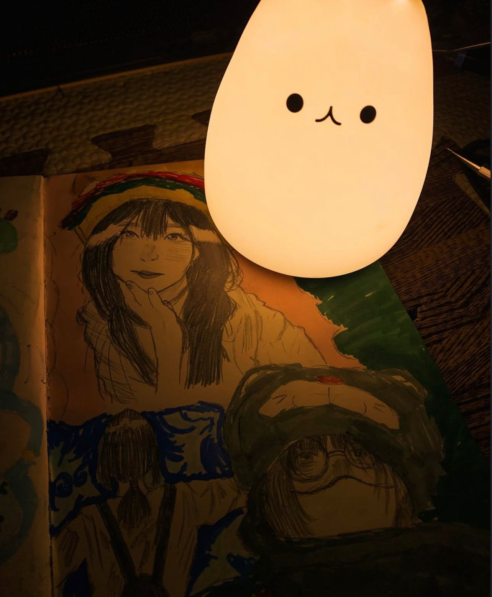
Please feel free to explore my creative journey and design projects that showcase innovation and aesthetic excellence.
I am a student at Pelita Harapan University or UPH, Information Systems Class of 2025. This portfolio website that I created is to showcase my skills in design, art, and also as a web designer. I also accept commissions or part-time work for people who want to purchase my services in creating images or websites.
Years Experience
Projects Done
PG Regina Pacis Jakarta
Prince's Creative School
Prince's Creative School
SMAK Penabur Kota Tangerang
Information Systems, Pelita Harapan University (UPH)
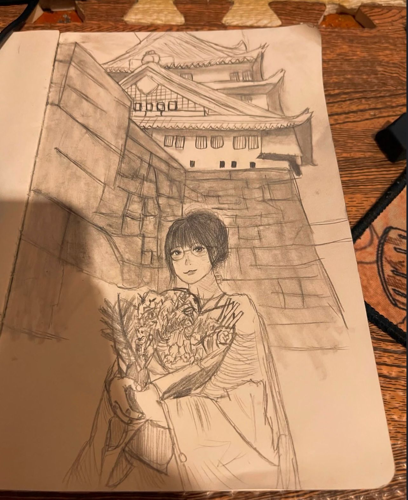
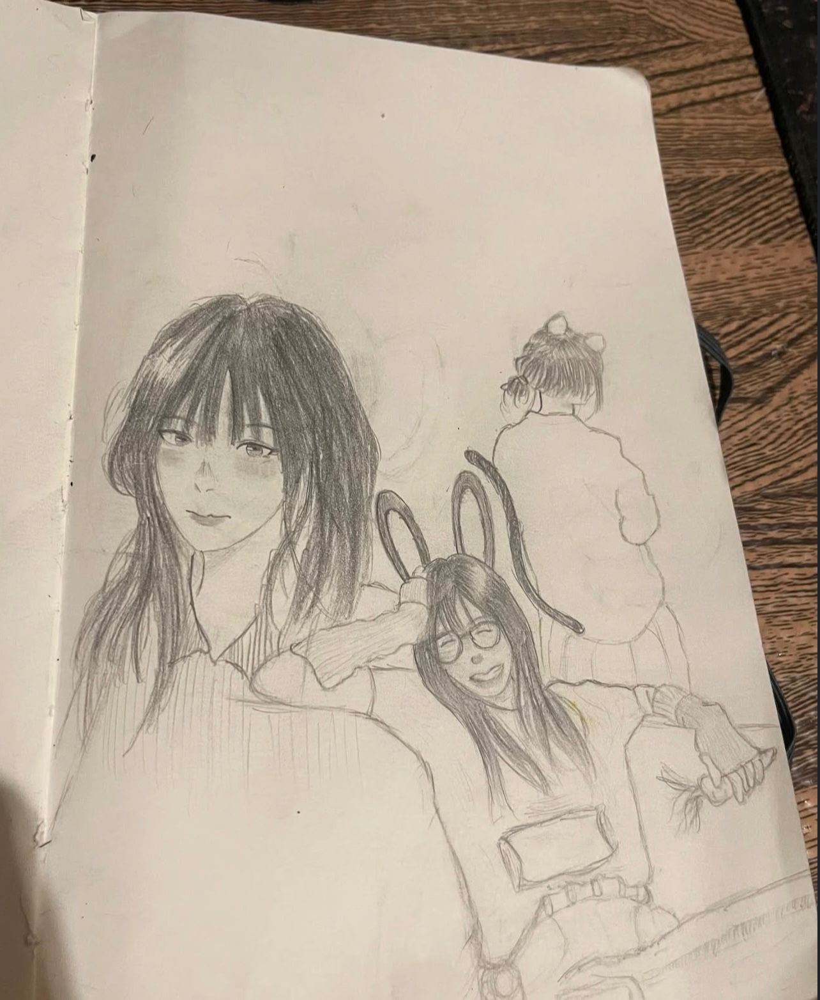
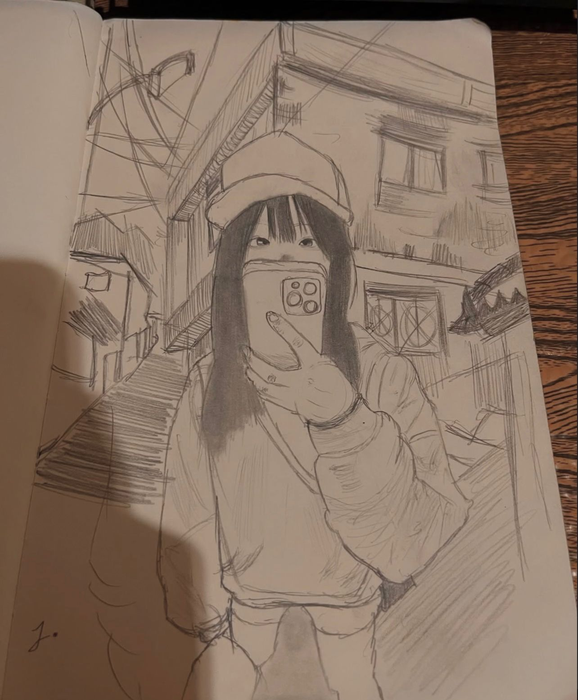
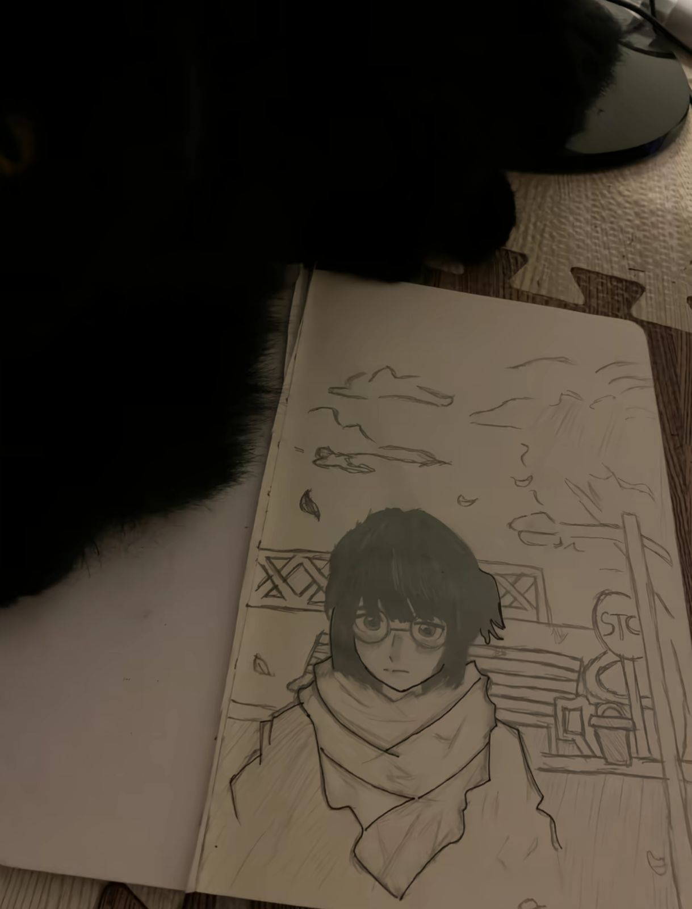
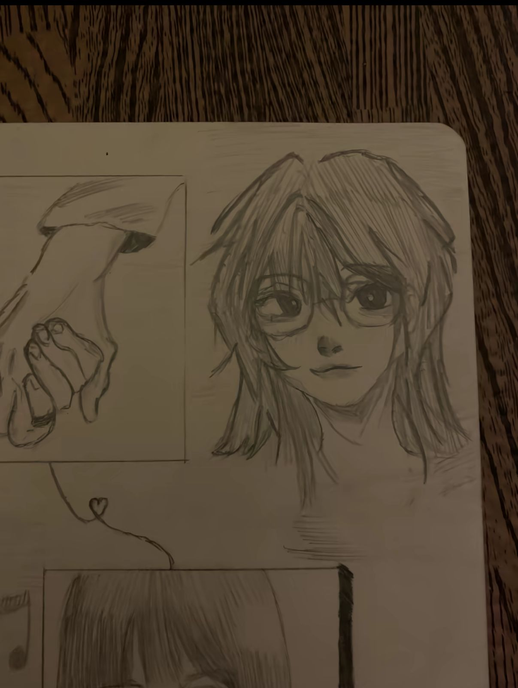
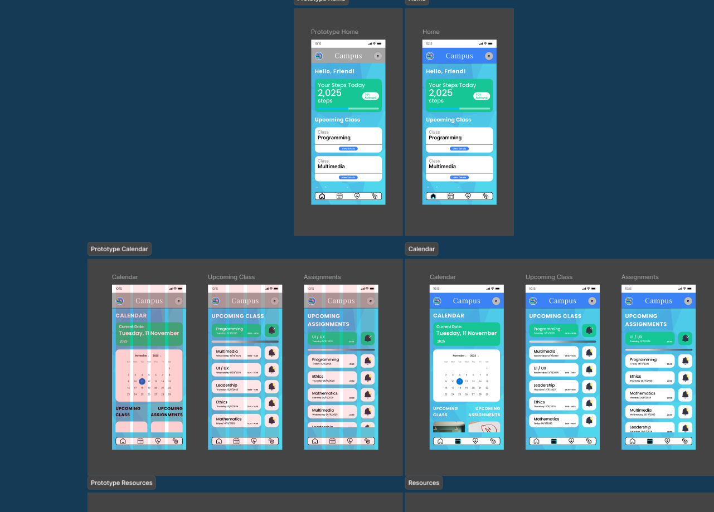
All-in-one student management with Calendar, Assignments, and Health Tracker features.
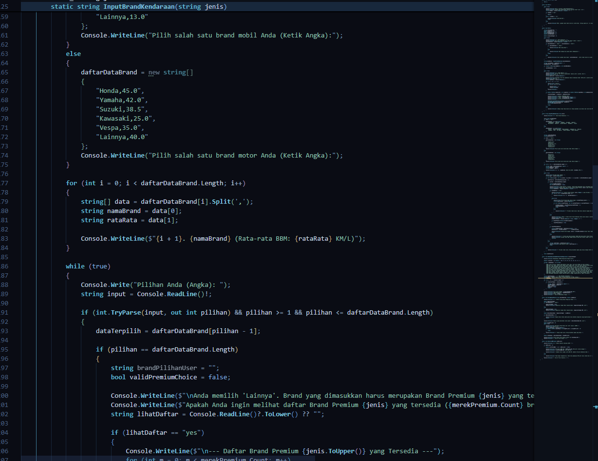
A program designed for car or motorcycle users to calculate the remaining fuel so they can estimate how many kilometers they can still travel. It also allows users to input the type of car or motorcycle. The calculation varies between different car or motorcycle brands.
I’m currently available for freelance work and open to new opportunities.
My Social Media
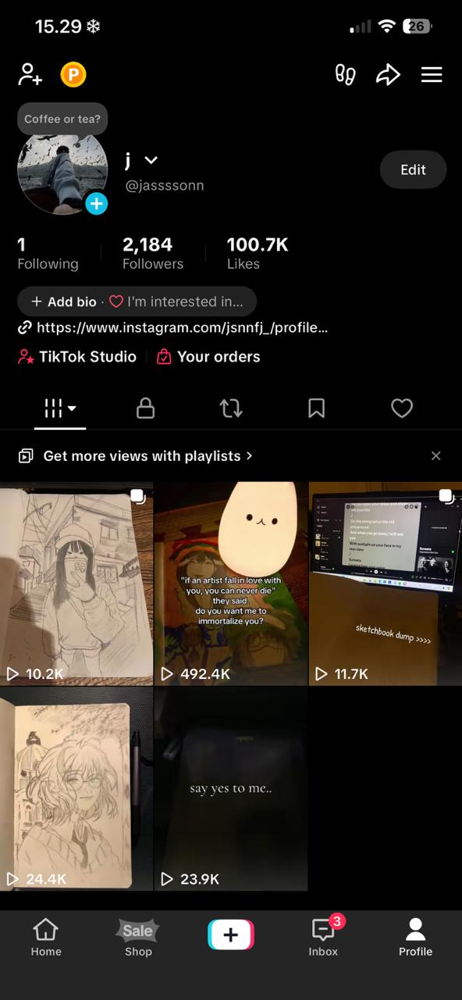
Find me on TikTok
Beside designing and coding, I love to share my creative artwork on TikTok. My focus is to post the results of my drawings and also include words or quotes in those posts, as well as use trending songs. Because of that, my posts can get on the For You Page (FYP), and over time, my TikTok account can grow and become known by people. That's enough to make extra money for me, by opening commissions.